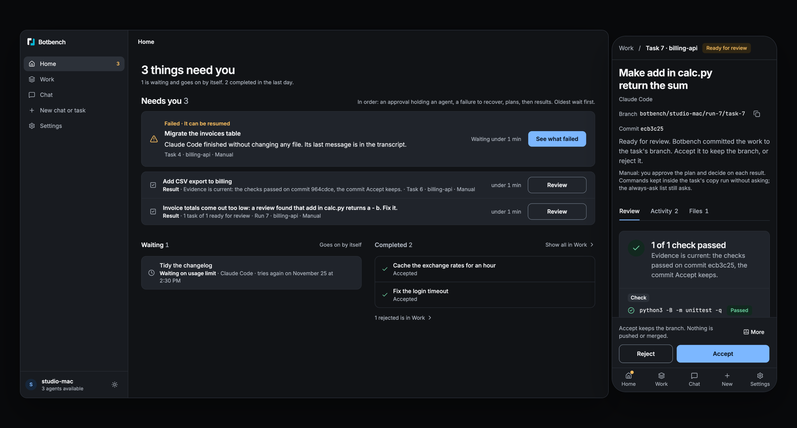
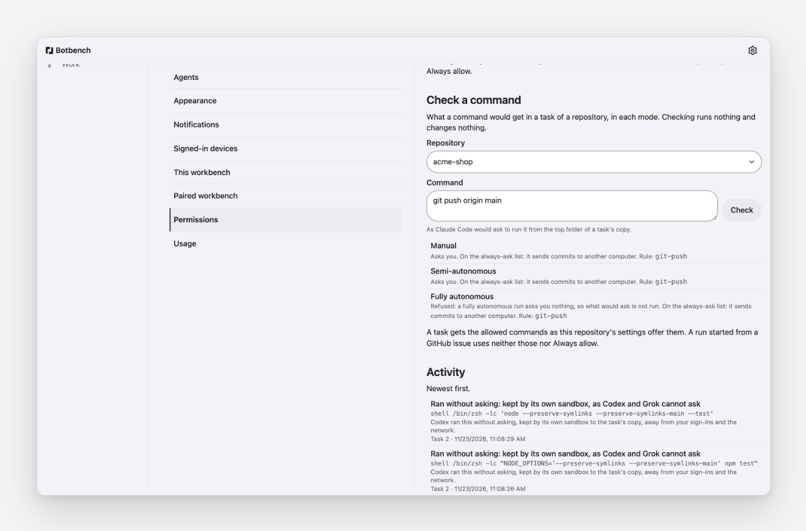

See the work in motion.
Shared GitHub visibility shows the other workbenches’ open pull requests and pushed branches.
Open source macOS only Early
One workbench for your agents.
One coordination layer for your team.
Hand tasks to Claude Code or Codex. Keep the work on separate branches. Pick it up on your Mac or phone when you’re ready to review.
Explore the code on GitHub
Inside the workbench
Choose a part of the workflow.
See what happens, and what you get back.
Hand over a task, or let Claude Code plan a run. Choose Claude Code or Codex to build. Each task works in its own copy of the repository, away from your current branch.
A separate place for the agent to work, with the permissions you chose.

Move a task that Claude Code is building to Codex. Botbench commits the work so far; Codex carries on in the same copy and branch.
The same task and the same branch, continued by Codex.
Pair two workbenches to exchange questions and answers. Every message is sent only when its owner approves. A message that arrives never starts work by itself.
Shared context through questions and answers approved by their owners.
Read the branch, the diff and the output of your repository’s checks. Another agent can review the change; its review is a model’s opinion, shown separately from the checks.
A branch with the change and the evidence. Botbench never merges a pull request.

Screens and recordings from the real product. The example project is a small demo shop.
The coordination layer Early
Your agents. Their agents. A shared view of the work, with each developer in control of their own Mac.

Shared GitHub visibility shows the other workbenches’ open pull requests and pushed branches.
See when a teammate already covers an issue or changes the same files. Issue claims can be turned on for a repository.
Paired workbenches exchange questions and answers only after their owners approve sending them.
Pairing has been demonstrated with two installations on one Mac. Testing across two Macs and broader autonomous coordination across owners remain ahead.
Watch the actual product
A 35-second recording.
One real task, ready for review.
A branch, a diff, the evidence.
The result is there to inspect when you return.
Start with one task
Bring your Mac and the agents you already use. Build Botbench from source, then make your first branch in a practice repository.
macOS · Node 24+ · Claude Code or Codex
Early software. No installer or hosted service.